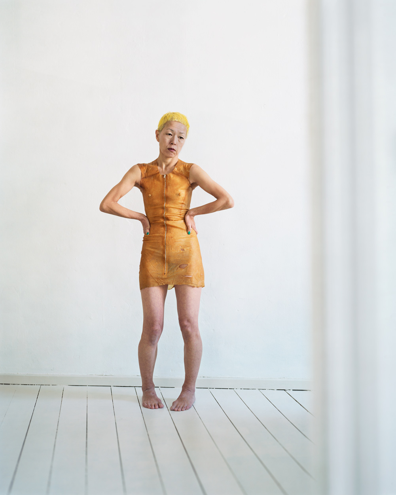
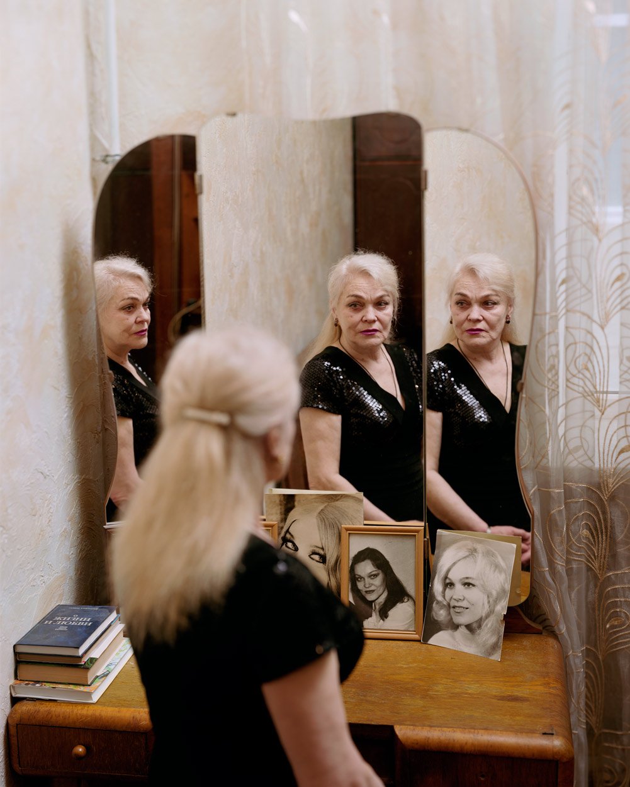
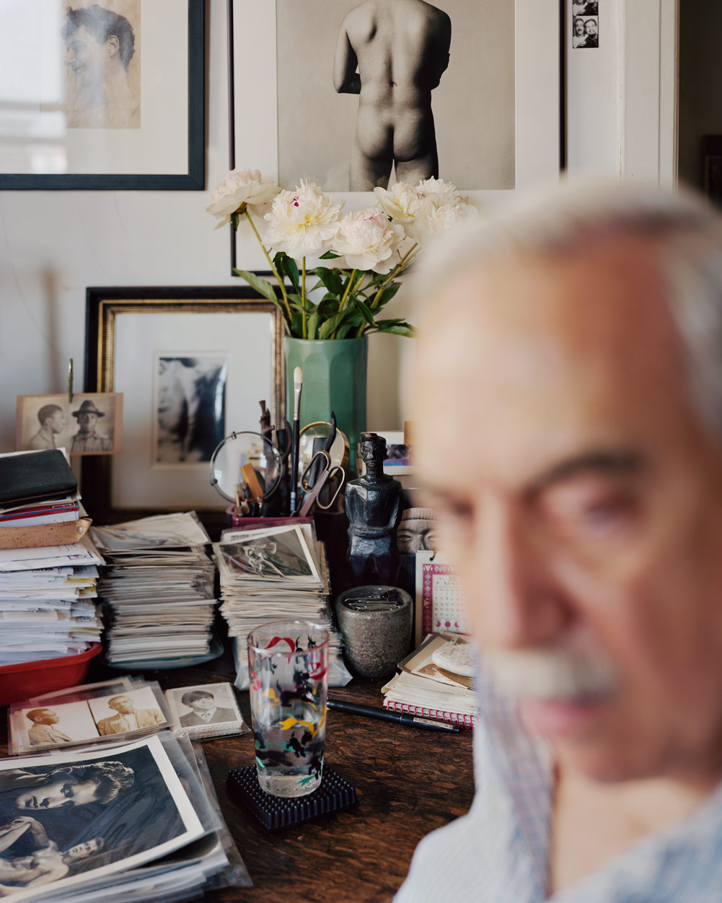

浏览人像作品时，最先注意到的往往是面孔、服装和色彩。人物好看、造型完整，能够让照片具有吸引力；但如果观看始终停在这一层，就很难知道，换一个人或一个房间后，还能从中借鉴什么。
可以把目光稍微移开面孔：人物占画面多大？哪些物品被留下？清楚的地方在哪里？动作与周围空间有没有关系？这些问题能帮助我们看见摄影师作出的选择，也让普通房间里的普通动作成为值得观看的内容。
以下结合 Alec Soth 的三幅室内人像与 Larry Sultan 的家庭系列，讨论这些取舍。具体画面分析属于本文解读；涉及作者自述时另行标明。它们提供观看的角度，不构成一套必须照做的拍摄标准。
人物占多大，决定我们先了解什么
面对同一个人，近距离特写与带环境的全身像会交代不同的信息。前者让面部表情和皮肤细节更明显；后者保留姿态、脚下的位置，以及身体与房间的关系。选择取景范围，也是在选择让读者通过什么了解这个人。

Alec Soth，Yuko. Berlin.。来源：摄影师官网系列。
这张照片里，人物没有填满画面。浅色墙面、地板与右侧虚化的遮挡仍然存在，身体的完整轮廓得到保留。橙黄色衣服与头发在较单纯的环境里容易被注意，双臂弯曲、双手停在腰侧的姿态也很清楚。
如果把它裁成胸像，人物会更大，面孔也更容易辨认，但双臂与身体形成的形状、赤脚站立的状态，以及上方空白带来的距离感都会减弱。这不是证明原构图一定更好，而是说明：扩大人物，会同时删去一些信息。
因此，判断一张人像时，不必先问人物够不够大。先看这张照片主要依靠表情、姿态还是空间成立，再判断取景是否给了这些内容足够的位置。
哪些家具值得留下，要看它们怎样参与画面
环境人像容易被理解为“把房间一起拍进去”。但环境的作用不只在于证明拍摄地点，也可能改变人物出现的方式。

Alec Soth，Galina. Odessa.。来源：摄影师官网系列。
Galina 面前的镜子，让同一个人在画面里以不同面向出现；桌面的肖像照片又加入另一种人物形象。前景的背影、镜中的脸与照片中的面孔，使观看从单一表情转向它们之间的对应。
这里的梳妆台和镜子因此承担了构图作用。若只保留正面头部，画面会更直接，却会失去反射形成的多重观看关系。至于这些旧照片具体属于谁、人物当时在想什么，不能仅凭画面确定。
观看其他作品时，也可以这样判断环境：一张椅子有没有改变身体姿态？一面镜子有没有增加观看方向？一件日常物品有没有让人物与空间发生联系？物品数量本身不是优点；能够参与表达的关系才值得继续看。
人脸一定要最清楚吗
初学拍人像时，把眼睛拍清楚是很有用的基本要求。它让表情能够被辨认，也方便发现失焦问题。但浏览作品时，还可以观察清晰度怎样安排注意力。

Alec Soth，Vince. New York City.。来源：摄影师官网系列。
Vince 的脸占据右侧近景，却处于虚化之中。桌面上的照片、纸张、花瓶与小物件更清楚，墙面影像也被保留下来。人物在场，但读者很难只停在他的面孔上，注意力会转向周围的东西。
这种清晰度分配，让环境获得了比传统面部特写更多的说明空间。它也有明确代价：表情与面部细节不容易辨认。若任务是交付一张需要清楚展示面孔的职业照，这种处理就未必合适。
同样是背景虚化，也值得追问虚化删掉了什么。它可以排除无关杂物，也可能抹去原本有用的生活线索。评价应回到照片希望让人看到的内容，而不是把大光圈或清晰背景当作通用答案。
房间能够介绍一个人，但不能替他证明一切
Alec Soth 在这组作品的作者说明中提到，他希望花时间观看他人，并尝试接近他们的内在生活，因此把照片都放在室内拍摄。这里可以确认的是他的创作方向，不能据此认定每一件物品都具有某种指定含义。作者说明，MACK
房间能提供线索：物品怎样摆放，人习惯坐在哪里，什么被反复使用，照片与书籍怎样进入日常生活。这些线索让人物不只通过长相出现。
但线索不等于结论。看到书多，不能直接判定一个人的学识；看到房间凌乱，也不能直接判定他的性格。一张照片还可能经过布置、选择角度与排除画外内容。较稳妥的分析，是先描述看见的关系，再说明它引起怎样的联想，不把联想写成人物事实。
在前面的三张照片里，环境提供了三种不同作用：Yuko 的空墙与地板突出了身体；Galina 的镜子改变了人物出现的方式；Vince 身后的物件则获得了更清楚的位置。环境可以很少，也可以很多，关键是它与人物的关系是否成立。
为什么熟悉的人，也值得持续拍
Larry Sultan 的《Pictures from Home》围绕父母与家庭展开。官网列出的场景包含沙发、厨房餐桌、床边、车库，以及阅读、交谈和休息。题材并不依赖一次特殊旅行或盛大活动。浏览完整系列
他在书中自述的节选里，将拍摄与对父母的感情、希望留住时间的愿望联系起来。这说明了他为什么持续回到这些熟悉的人身边；它并不意味着所有画面都只是未经安排的家庭快照。
MACK 的介绍指出，作品结合了当时拍摄的照片、家庭影片画面、对话片段和文字，并让纪实与布置之间的界限变得含混。出版方介绍
这对观看家庭摄影很有启发。自然感不能仅凭“有没有摆拍”判断；经过安排的姿态也可能表达熟悉关系，偶然抓到的动作也未必自动具有意义。更值得观察的是：人物的动作是否与情境相连，画面保留了怎样的亲近或距离，以及不同照片之间是否产生新的理解。
熟悉也不保证一定能拍好，却提供了反复观看的机会。同一个人在不同时间坐在同一张沙发上，姿态、光线、周围物品与彼此关系都可能变化。这种变化需要时间发现，不必每次都靠新场景制造新鲜感。
浏览作品时，可以带着哪些问题
不需要每张照片都做完整分析。先自然浏览一个系列，记下最想停留的两三张，再选择其中一个问题看得更细：
| 观察方向 | 可以问什么 | 它帮助理解什么 |
|---|---|---|
| 人物与画幅 | 人物为什么占这么大或这么小？裁近之后会失去什么？ | 取景怎样分配表情、姿态与空间的信息 |
| 家具与物品 | 哪一件东西真正参与了画面？拿掉后会改变什么？ | 环境怎样提供人物线索或构图关系 |
| 姿态与视线 | 手放在哪里，身体依靠什么，目光与谁发生联系？ | 动作怎样形成关系，而非只作为造型 |
| 光与清晰度 | 哪些地方最亮、最清楚？它们与人物是什么关系？ | 观看注意力怎样被组织 |
| 系列与时间 | 相邻照片怎样改变对同一个人的理解？ | 单张照片之外怎样形成连续表达 |
再把喜欢的两位摄影师并排看。一个人怎样处理室内的空白，另一个人怎样保留物品；一个人让目光直接面对镜头，另一个人怎样通过动作与环境交代人物。比较具体差异，比只给风格贴标签更容易留下可用的认识。
从作品中带走一个选择
作品欣赏与拍摄教程各有用途。教程通常需要说明操作，作品集则能呈现同一类问题的不同答案。成片可以帮助分析画面关系，却不足以还原现场灯位、参数或完整沟通过程。
对于开始拍人像的人，可以先从喜欢的照片里带走一个选择：保留完整身体、让人物坐在常用的位置，或给某件日常物品留下空间。找熟悉的人和容易进入的场景，拍完再比较这个选择具体增加了什么，又牺牲了什么。
人物没有模特经验，也不必急着让他完成复杂姿态。坐下、翻书、整理衣服或与人交谈，都可以成为观察的起点。是否值得保留，仍要看动作在画面里是否清楚、是否与人物和环境有关系。
下一次打开摄影师的网站，除了收藏喜欢的照片，还可以试着写下一句具体判断：这里为什么需要这个房间、这段距离，或者这件物品。能说清其中一个选择，浏览就多了一层理解。
继续浏览
- Alec Soth：I Know How Furiously Your Heart Is Beating：本文三幅作品所在系列，可继续比较人物与室内空间。
- Larry Sultan：Pictures from Home：家庭人物、日常动作与生活空间。
- Doug DuBois：All the Days and Nights：围绕家人展开的连续作品。
- Nick Waplington：Living Room：另一个观看家庭生活与多人场面的入口。
资料核对：2026 年 10 月 26 日。本文依据公开作品、作者说明和出版方介绍整理，未将成片分析写作现场拍摄记录。
留言
由 Disqus 提供。